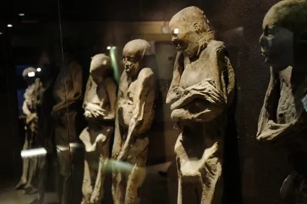

Los lugares turisticos que debes visitar
Universidad de Guanajuato
La Universidad de Guanajuato es uno de los íconos arquitectónicos más
atractivos de la ciudad. Está ubicada en el Centro Histórico, fue fundada en
1732, y, aunque edificios que la componen están diseminados por todo el
estado, la sede principal es la que se roba la atención de todos los turistas.
Lo que la hace destacar es su fachada neoclásica de cantera verde y la gran
escalinata de más de 80 escalones. Aquí encontrarás uno de los mejores
lugares turísticos en Guanajuato para tomar fotos y ver una linda vista de la
ciudad.
Si la visitas también podrás conocer el Museo de Historia Natural Alfredo
Dugés, que se ubica justo al lado. Ten en cuenta que la universidad está en
pleno centro, así que lo mejor es llegar caminando.
Callejón del Beso
El Callejón del Beso, en el Centro Histórico, es uno de los lugares turísticos de la
capital de Guanajuato más visitados. Los muros encierran la trágica historia d
amor de Ana, una doncella de alta sociedad y Carlos, un humilde minero.
Los balcones del callejón, que casi pueden tocarse, eran el lugar donde los
amantes se reunían a escondidas. Según la leyenda, las parejas que visiten estos
espacios turísticos de Guanajuato deben darse un beso para asegurar la buena
suerte.
Debes en cuenta que la entrada a los balcones es paga; también recuerda que
es un destino muy concurrido y suelen hacerse filas largas para tomarse fotos
En los alrededores encontrarás algunos hoteles y vendedores ambulantes.
Museo de las Momias
El Museo de las Momias está en pleno Centro Histórico de Guanajuato, en el
Panteón Municipal de Santa Paula. Por su popularidad, es uno de los mejores
lugares de Guanajuato para visitar, incluso ha llegado a tener apariciones en
El museo cuenta con más de 100 momias, siendo la colección más grande del
mundo. Si quieres vivir una experiencia única debes visitarlo, aquí podrás observar
cuerpos que datan del año 1867, conocer datos sobre sus hallazgos y sobre el
proceso de momificación.
El museo ofrece todos los servicios: visitas guiadas, estacionamiento y baños. Una
advertencia: si eres fácilmente impresionable, puede que no sea uno de los
lugares en Guanaguato más adecuados para conocer.

Mercado Hidalgo
En pleno Centro de Histórico, encontrarás uno de los mejores lugares para visitar
en Guanajuato, capital: el Mercado Hidalgo. Este lugar está ubicado en la que
originalmente iba a ser una estación de tren, y es, sin lugar a dudas, una parada
obligatoria si decides viajar a Guanajuato.
En el primer piso encontrarás, a precios muy baratos, gran variedad de jugos,
frutas, verduras, dulces y comida típica; mientras que en la parte de arriba un sinfín
de artesanías, ropa y juguetes captaran tu atención. Ten en mente es mejor ir
caminando, porque no hay lugar para estacionar; y si buscas hotel para pasar tus
vacaciones en Guanajuato, hay varias opciones cerca.
Teatro Juárez
Si no sabes qué lugares históricos de Guanajuato visitar, El Teatro Juárez es
uno de los edificios más importantes. Tardó más de 20 años en construirse,
fue inaugurado en 1903 y destaca visualmente por mezclar en su diseño y
decoración estilos romanos, griegos y orientales
Si haces un viaje a Guanajuato no debes perder la oportunidad de conocer
una de las edificaciones más bonitas de la ciudad, con sus largas columnas y
detalles en oro.
Además de los espectáculos que se llevan a cabo en el teatro, se hacen
recorridos guiados por el interior, donde podrás conocer la historia del recinto.
En los alrededores encontrarás varios restaurantes y hoteles.